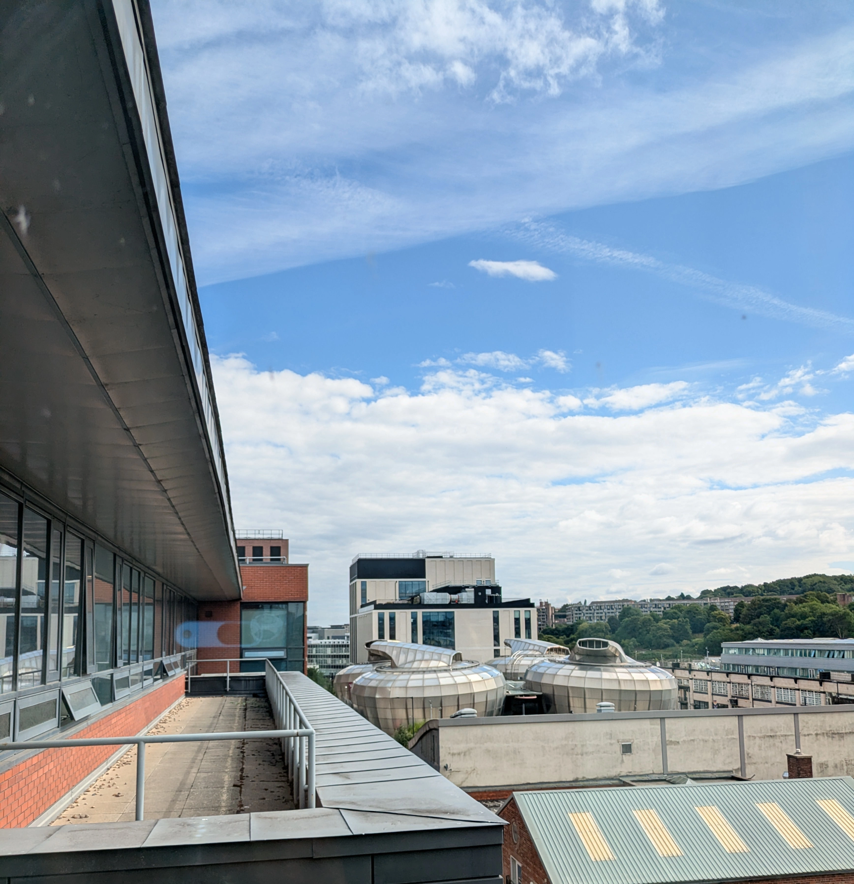

Course List
| Course Title | Course Type | Course Summary | Course Award Name | UCAS Code | UCAS Points | Year of Entry | Mode of Attendance | Study Length | Has Foundation Year |
| Computing | Undergraduate | Learn how to code, configure and integrate applications, databases and systems architectures. | BSc (Honours) | G504 | 112 | 2026/27 | Full-time | 3 / 4 Years | FALSE |
| Computer Networks | Undergraduate | Includes general computing skills in programming, cyber security, and information systems. | BSc (Honours) | G420 | 112 | 2026/27 | Full-time | 3 / 4 Years | FALSE |
| Cyber Security with Forensics | Undergraduate | Prepare for a career in cyber security by designing security systems and identifying evidence of cybercrimes. | BSc (Honours) | F4G4 | 112 | 2026/27 | Full-time | 3 / 4 Years | FALSE |
| Computer Science for Games | Undergraduate | Create the software powering the next generation of blockbuster games. | BSc (Honours) | G611 | 112 | 2026/27 | Full-time | 3 / 4 Years | FALSE |
| Software Engineering | Undergraduate | Gain experience in the whole software development process and prepare for a career in software engineering. | BEng (Honours) | G600 | 112 | 2026/27 | Full-time | 3 / 4 Years | FALSE |
| Computer Science | Undergraduate | Gain a solid foundation in the core areas of computer science, including programming, algorithms, and data structures. | BSc (Honours) | G400 | 112 | 2026/27 | Full-time | 3 / 4 Years | FALSE |
| Computing with Foundation Year | Undergraduate | Gain a degree in computing – with an initial foundation year to prepare for the course. | BSc (Honours) | A020 | 80 | 2026/27 | Full-time | 4 / 5 Years | TRUE |
| Cyber Security with Forensics with Foundation Year | Undergraduate | Gain a degree in cyber security with forensics, with an initial foundation year to prepare for the course. | BSc (Honours) | A023 | 80 | 2026/27 | Full-time | 4 / 5 Years | TRUE |
| Software Engineering with Foundation Year | Undergraduate | Gain a degree in software engineering, with an initial foundation year to prepare for the course. | BEng (Honours) | A017 | 80 | 2026/27 | Full-time | 4 / 5 Years | TRUE |
| Cyber Security with Foundation Year | Undergraduate | Gain a degree in cyber security – with an initial foundation year to prepare for the course. | BSc (Honours) | A093 | 80 | 2026/27 | Full-time | 4/5 Years | TRUE |
| Information Technology with Business Studies with Foundation Year | Undergraduate | Gain a degree in information technology with business studies, with an initial foundation year to prepare for the course. | BSc (Honours) | A019 | 80 | 2026/27 | Full-time | 4/5 Years | TRUE |
| Computer Science with Foundation Year | Undergraduate | Gain a degree in computer science, with an initial foundation year to prepare for the course. | BSc (Honours) | A022 | 80 | 2026/27 | Full-time | 4/5 Years | TRUE |
| Computer Science for Games with Foundation Year | Undergraduate | Gain a degree in computer science for games, with an initial foundation year to prepare for the course. | BSc (Honours) | A092 | 80 | 2026/27 | Full-time | 4/5 Years | TRUE |
| Graphic Design | Undergraduate | Develop your own creative and innovative approach to graphic design. | BA (Honours) | W210 | 112 | 2026/27 | Full-time | 3 / 4 Years | FALSE |
| Business and Digital Technology with Foundation Year | Undergraduate | Gain a degree in business and digital communications technology – with an initial foundation year to prepare for the course. | BSc (Honours) | A018 | 80 | 2026/27 | Full-time | 4/5 Years | TRUE |
| Computing | Postgraduate | A course enhanced by real-life project experience for non-computing graduates wanting to pursue a career in the IT industry. | MSc | 2026/27 | Part-time | 3 Years | FALSE | ||
| Computing and Informatics | Postgraduate | Conduct a period of intensive, supervised study where you critically investigate and evaluate an approved topic and make an original contribution to knowledge. | MPhil | 2026/27 | Part-time | 3 Years | FALSE | ||
| Cyber Security | Postgraduate | Develop your skills and academic knowledge in the growing field of cyber security through academic teaching, industry input and practical skills development. | MSc | 2026/27 | Full-time | 1 Year | FALSE | ||
| Interior Architecture and Design | Undergraduate | Develop your own creative and sustainable approach to interior architecture and design by challenging and exploring contemporary practices through a series of exciting and diverse projects. | BA (Honours) | W250 | 112 | 2026/27 | Full-time | 3 / 4 Years | FALSE |
| Jewellery, Materials and Design | Undergraduate | Develop your own creative and innovative approach to jewellery design, challenging and exploring contemporary practices through new technologies and craft techniques. | BA (Honours) | W721 | 112 | 2026/27 | Full-time | 3 / 4 Years | FALSE |
| Game Design and Development | Undergraduate | Study a course with a distinctive, practice-based approach to games design – gaining a diverse skill set and useful experience within the field. | BA (Honours) | A112 | 112 | 2026/27 | Full-time | 3 / 4 Years | FALSE |
| Product Design | Undergraduate | Develop a highly creative approach to producing innovative 'future-facing' products by exploring and challenging design through a series of exciting and diverse projects. | BSc (Honours) | D009 | 112 | 2026/27 | Full-time | 3 / 4 Years | FALSE |
| Product Design | Undergraduate | Develop a creative and innovative approach to product design and service innovation by challenging and exploring contemporary practices through a series of exciting and diverse projects. | BA (Honours) | W240 | 112 | 2026/27 | Full-time | 3 / 4 Years | FALSE |
| Digital Media Production | Undergraduate | Design and produce new media products in film, animation, interactive media, web, apps, VR, cross-media and games. | BA (Honours) | W212 | 112 | 2026/27 | Full-time | 3 / 4 Years | FALSE |
